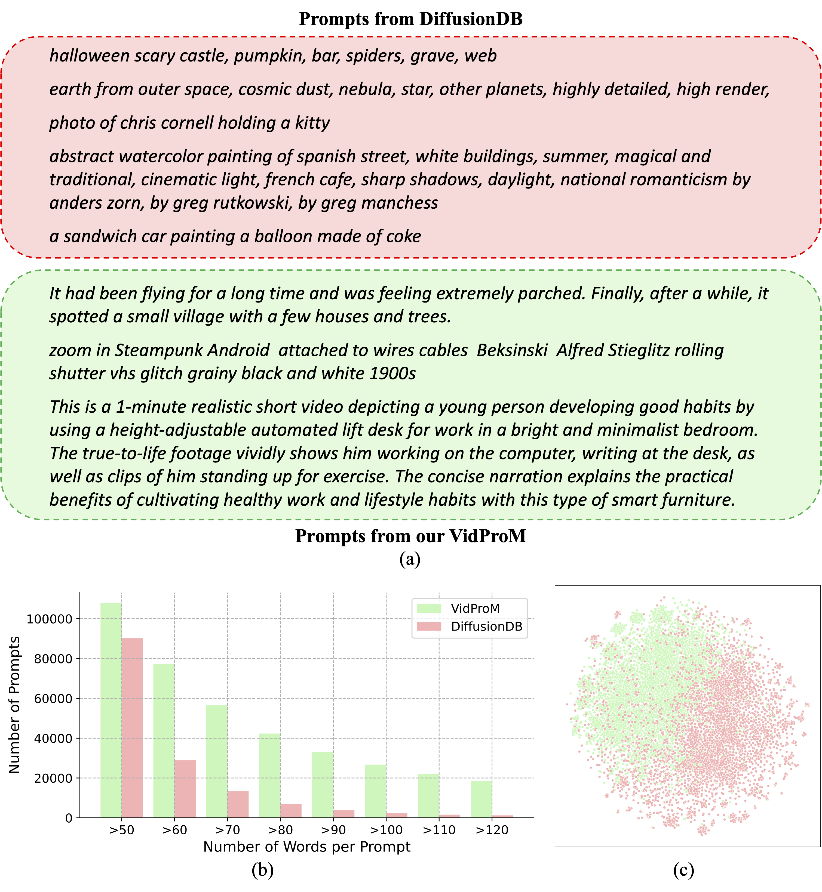
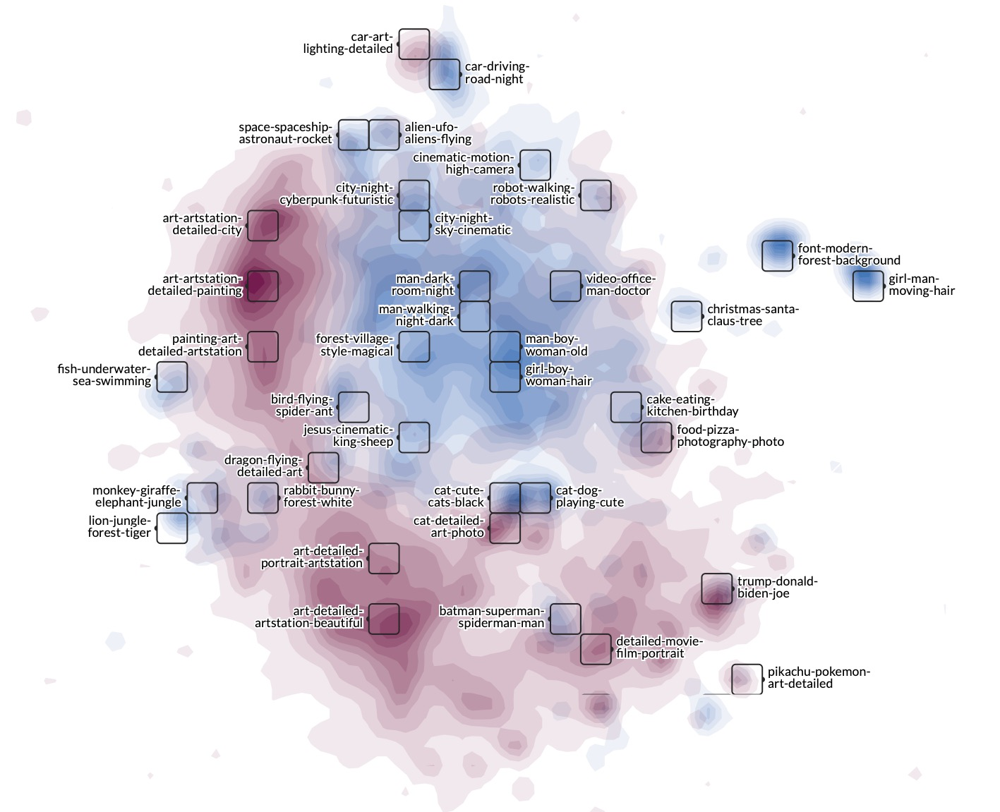

VidProM is the first dataset featuring 1.67 million unique text-to-video prompts and 6.69 million videos generated from 4 different state-of-the-art diffusion models. It inspires many exciting new research areas, such as Text-to-Video Prompt Engineering, Efficient Video Generation, Fake Video Detection, and Video Copy Detection for Diffusion Models.
Abstract
The arrival of Sora marks a new era for text-to-video diffusion models, bringing significant advancements in video generation and potential applications. However, Sora, along with other text-to-video diffusion models, is highly reliant on prompts, and there is no publicly available dataset that features a study of text-to-video prompts. In this paper, we introduce VidProM, the first large-scale dataset comprising 1.67 Million unique text-to-Video Prompts from real users. Additionally, this dataset includes 6.69 million videos generated by four state-of-the-art diffusion models, alongside some related data. We initially discuss the curation of this large-scale dataset, a process that is both time-consuming and costly. Subsequently, we underscore the need for a new prompt dataset specifically designed for text-to-video generation by illustrating how VidProM differs from DiffusionDB, a large-scale prompt-gallery dataset for image generation. Our extensive and diverse dataset also opens up many exciting new research areas. For instance, we suggest exploring text-to-video prompt engineering, efficient video generation, and video copy detection for diffusion models to develop better, more efficient, and safer models.
Datapoint

Basic information of VidProM and DiffusionDB

Differences between prompts in VidProM and DiffusionDB
WizMap visualization of prompts in VidProM and DiffusionDB
Paper

VidProM: A Million-scale Real Prompt-Gallery Dataset for Text-to-Video Diffusion Models
Wenhao Wang and Yi Yang
NeurIPS, 2024.
@article{wang2024vidprom,
title={VidProM: A Million-scale Real Prompt-Gallery Dataset for Text-to-Video Diffusion Models},
author={Wang, Wenhao and Yang, Yi},
journal={Thirty-eighth Conference on Neural Information Processing Systems},
year={2024},
url={https://openreview.net/forum?id=pYNl76onJL}
}Contact
If you have any questions, feel free to contact Wenhao Wang (wangwenhao0716@gmail.com).
Works based on VidProM
We are actively collecting your awesome works based on our VidProM. Please let us know if you finish one.
1. Ji, Lichuan, et al. "Distinguish Any Fake Videos: Unleashing the Power of Large-scale Data and Motion Features." arXiv preprint arXiv:2405.15343 (2024).
2. Xuan, He, et al. "VIDEOSCORE: Building Automatic Metrics to Simulate Fine-grained Human Feedback for Video Generation." arXiv preprint arXiv:2406.15252 (2024).
3. Liao, Mingxiang, et al. "Evaluation of Text-to-Video Generation Models: A Dynamics Perspective." arXiv preprint arXiv:2407.01094 (2024).
4. Miao, Yibo, et al. "T2VSafetyBench: Evaluating the Safety of Text-to-Video Generative Models." arXiv preprint arXiv:2407.05965 (2024).
Acknowledgements
This template was originally made by Phillip Isola and Richard Zhang for a colorful project, and inherits the modifications made by Jason Zhang and Shangzhe Wu. The code can be found here.